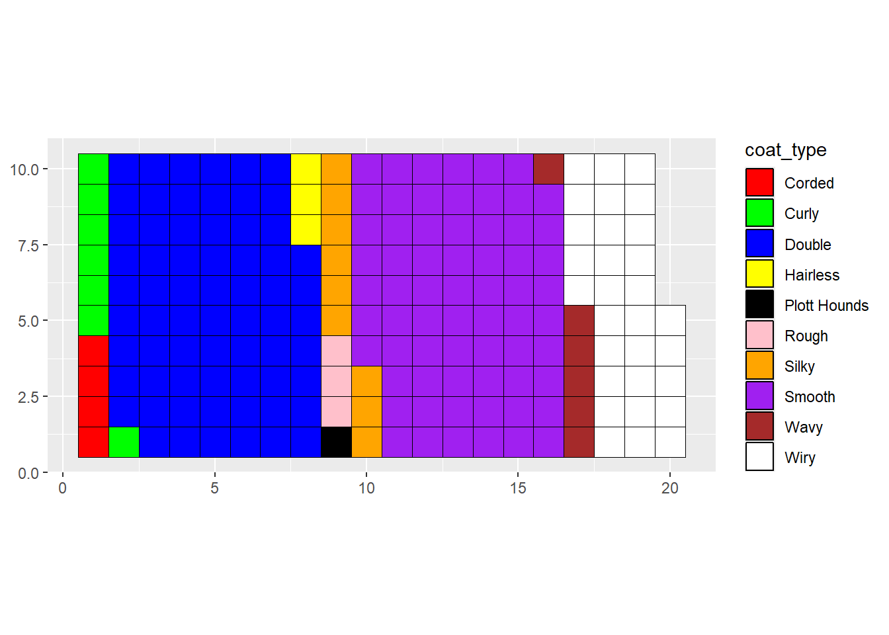
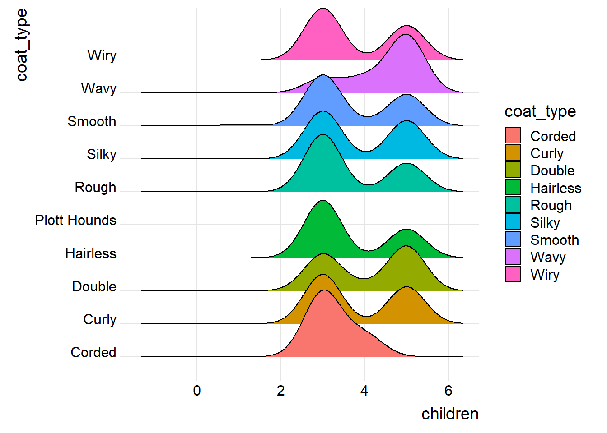
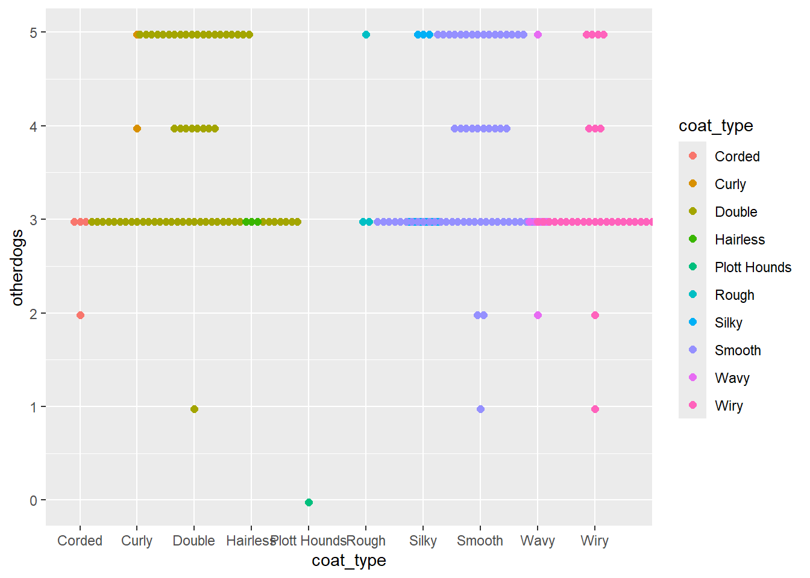
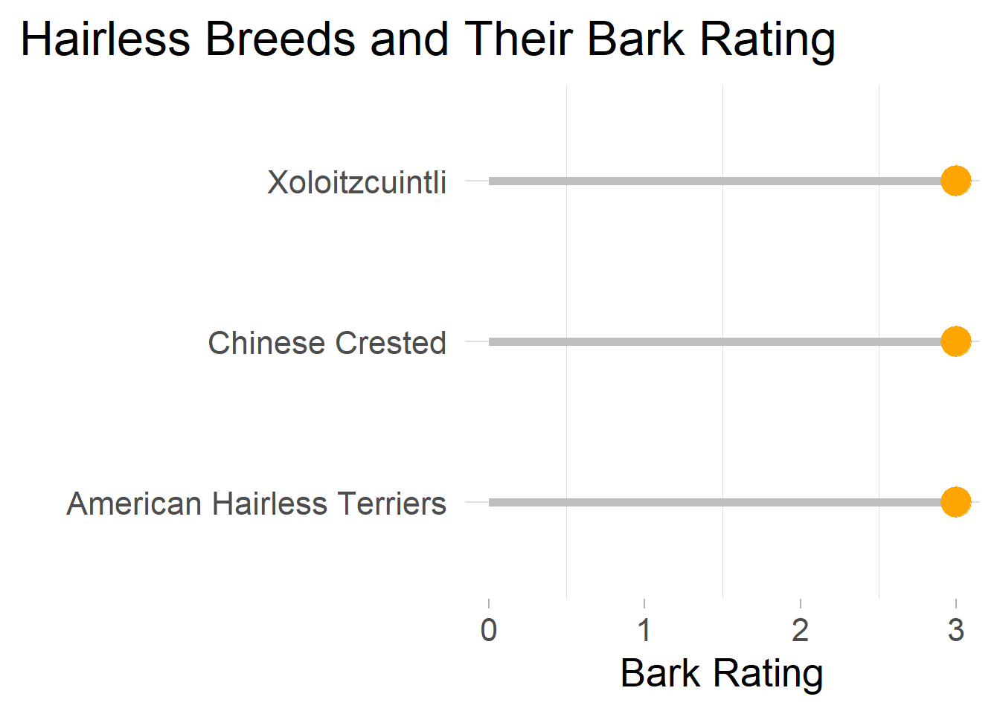

library(ggplot2)
library(ggthemes)## Warning: package 'ggthemes' was built under R version 4.4.3library(colorblindr)## Loading required package: colorspace## Warning: package 'colorspace' was built under R version 4.4.3library(colorspace)
library(wesanderson)## Warning: package 'wesanderson' was built under R version 4.4.3library(ggsci)
library(tidytuesdayR)## Warning: package 'tidytuesdayR' was built under R version 4.4.3library(waffle)## Warning: package 'waffle' was built under R version 4.4.3library(pals)## Warning: package 'pals' was built under R version 4.4.3library(dplyr)##
## Attaching package: 'dplyr'## The following objects are masked from 'package:stats':
##
## filter, lag## The following objects are masked from 'package:base':
##
## intersect, setdiff, setequal, uniontuesdata <- tidytuesdayR::tt_load('2022-02-01')## ---- Compiling #TidyTuesday Information for 2022-02-01 ----
## --- There are 3 files available ---
##
##
## ── Downloading files ───────────────────────────────────────────────────────────
##
## 1 of 3: "breed_traits.csv"
## 2 of 3: "trait_description.csv"
## 3 of 3: "breed_rank.csv"breed_traits <- tuesdata$breed_traits
breed_traits <- breed_traits %>%
filter(Breed != "Plott Hounds")Plot 1 Waffle plot to look at variation in coat type among the dogs in the data set.
table_data <- as.data.frame(table(coat_type = breed_traits$`Coat Type`))
waffleplot <- ggplot(data=table_data) +
aes(fill = coat_type, values = Freq) +
waffle::geom_waffle(n_rows = 10, size = 0.33, colour = "black") +
coord_equal() +
scale_fill_manual(values = wes_palette("Royal2")) +
theme() +
scale_fill_manual(values=c("red", "green", "blue", "yellow", "black", "pink", "orange", "purple", "brown", "white"))## Scale for fill is already present.
## Adding another scale for fill, which will replace the existing scale.waffleplot Plot 2 Ridgeline plot to compare map dog breed coat type with how good they are with young children.
d <- data.frame(breed=breed_traits$Breed, otherdogs=breed_traits$`Good With Other Dogs`, children=breed_traits$`Good With Young Children`, coat_type=breed_traits$`Coat Type`, bark=breed_traits$`Barking Level`)
ridgeplot <- ggplot(data=d) +
aes(x=children, y=coat_type, fill=coat_type) +
ggridges::geom_density_ridges() +
ggridges::theme_ridges()
ridgeplot## Picking joint bandwidth of 0.45 Plot 3 Swarmplot to show coat type compared to how good the breed is with other dogs.
swarmplot <- ggplot(data=d) +
aes(x=coat_type,y=otherdogs,color=coat_type) +
ggbeeswarm::geom_beeswarm(method = "center",size=2)
swarmplot## Warning: In `position_beeswarm`, method `center` discretizes the data axis (a.k.a the
## continuous or non-grouped axis).
## This may result in changes to the position of the points along that axis,
## proportional to the value of `cex`.
## This warning is displayed once per session. Plot 4 Lollipop plot to look at hairless breeds and their ratings for Barking Level.
# lollipop plot
d <- data.frame(Breed=breed_traits$Breed, Coat_Type=breed_traits$`Coat Type`, Bark_Rating=breed_traits$`Barking Level`)
edit_d <- d[d$Coat_Type=="Hairless",]
Lollipop <- ggplot(data=edit_d) +
aes(x=Breed, y= Bark_Rating) +
geom_segment(aes(x=Breed,
xend=Breed,
y=0,
yend=Bark_Rating),
color="grey",
linewidth=2) +
geom_point( color="orange", size=7) +
labs(title="Hairless Breeds and Their Bark Rating",
x="",
y="Bark Rating") +
coord_flip() + # flips axis
theme_light(base_size=20,base_family=
"Monaco") +
theme(
panel.grid.major.x = element_blank(),
panel.border = element_blank(),
axis.ticks.y = element_blank(),
plot.title.position = "plot",
plot.title = element_text(hjust = 0))
Lollipop## Warning in grid.Call(C_stringMetric, as.graphicsAnnot(x$label)): font family
## not found in Windows font database
## Warning in grid.Call(C_stringMetric, as.graphicsAnnot(x$label)): font family
## not found in Windows font database
## Warning in grid.Call(C_stringMetric, as.graphicsAnnot(x$label)): font family
## not found in Windows font database## Warning in grid.Call(C_textBounds, as.graphicsAnnot(x$label), x$x, x$y, : font
## family not found in Windows font database
## Warning in grid.Call(C_textBounds, as.graphicsAnnot(x$label), x$x, x$y, : font
## family not found in Windows font database
## Warning in grid.Call(C_textBounds, as.graphicsAnnot(x$label), x$x, x$y, : font
## family not found in Windows font database## Warning in grid.Call.graphics(C_text, as.graphicsAnnot(x$label), x$x, x$y, :
## font family not found in Windows font database
## Warning in grid.Call.graphics(C_text, as.graphicsAnnot(x$label), x$x, x$y, :
## font family not found in Windows font database
## Warning in grid.Call.graphics(C_text, as.graphicsAnnot(x$label), x$x, x$y, :
## font family not found in Windows font database
```